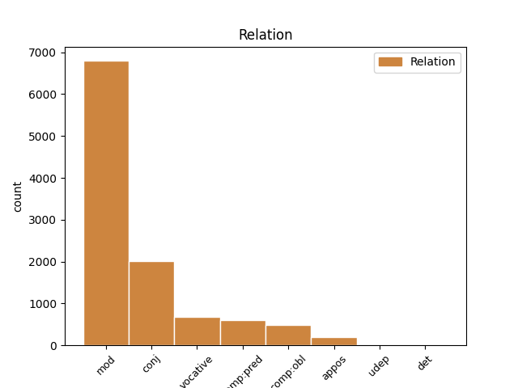
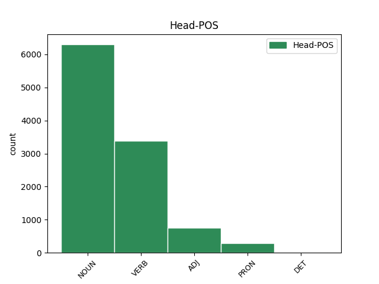
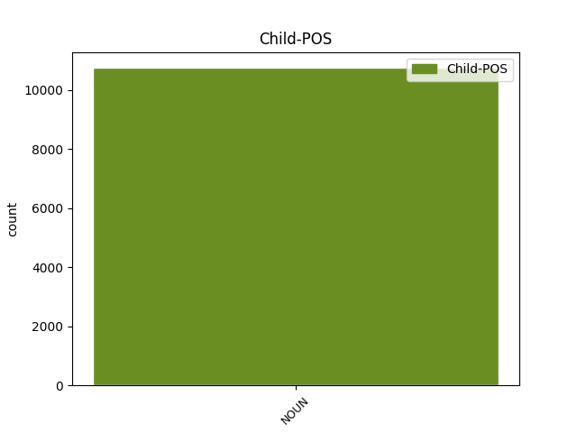

Distribution of features within this leaf



Agreement Rules sorted by frequency.
- When the dependent token is the modifer(mod) of the head token, and the head token is NOUN and the dependent token is NOUN.
1 κλάδους _ _ _ _ 0 _ _ _
2 μὲν _ _ _ _ 0 _ _ _
3 αὐτοῦ _ _ _ _ 0 _ _ _
4 λεῖπε _ _ _ _ 0 _ _ _
5 , _ _ _ _ 0 _ _ _
6 σημεῖον σημεῖον NOUN n-s---na- Case=Acc|Gender=Neut|Number=Sing 0 _ _ _
7 πόνου πόνος NOUN n-s---mg- Case=Gen|Gender=Masc|Number=Sing 6 mod _ SpaceAfter=No
8 . _ _ _ _ 0 _ _ _
1 ἔχω _ _ _ _ 0 _ _ _
2 στρόφους στρόφος NOUN n-p---ma- Case=Acc|Gender=Masc|Number=Plur 0 _ _ _
3 ζώνας ζώνη NOUN n-p---fa- Case=Acc|Gender=Fem|Number=Plur 2 conj _ _
4 τε _ _ _ _ 0 _ _ _
5 , _ _ _ _ 0 _ _ _
6 συλλαβὰς _ _ _ _ 0 _ _ _
7 πέπλων _ _ _ _ 0 _ _ _
1 ἀλλ̓ _ _ _ _ 0 _ _ _
2 οὔτι _ _ _ _ 0 _ _ _
3 δαρὸν _ _ _ _ 0 _ _ _
4 χρόνον χρόνος NOUN n-s---ma- Case=Acc|Gender=Masc|Number=Sing 5 mod _ _
5 ἐρημώσει ἐρημόω VERB v3sfia--- Mood=Ind|Number=Sing|Person=3|Tense=Fut|VerbForm=Fin|Voice=Act 0 _ _ _
6 πατήρ _ _ _ _ 0 _ _ _
7 . _ _ _ _ 0 _ _ _
1 στείχοιτ̓ στείχω VERB v2ppoa--- Mood=Opt|Number=Plur|Person=2|Tense=Pres|VerbForm=Fin|Voice=Act 0 _ _ _
2 ἄν _ _ _ _ 0 _ _ _
3 , _ _ _ _ 0 _ _ _
4 ἄνδρες ἀνήρ NOUN n-p---mv- Case=Voc|Gender=Masc|Number=Plur 1 vocative _ SpaceAfter=No
5 · _ _ _ _ 0 _ _ _
1 ἢ _ _ _ _ 0 _ _ _
2 τοῖσιν _ _ _ _ 0 _ _ _
3 ἢ _ _ _ _ 0 _ _ _
4 τοῖς _ _ _ _ 0 _ _ _
5 πόλεμον _ _ _ _ 0 _ _ _
6 αἴρεσθαι _ _ _ _ 0 _ _ _
7 μέγαν _ _ _ _ 0 _ _ _
8 πᾶσ̓ _ _ _ _ 0 _ _ _
9 ἔστ̓ εἰμί VERB v3spia--- Mood=Ind|Number=Sing|Person=3|Tense=Pres|VerbForm=Fin|Voice=Act 0 _ _ _
10 ἀνάγκη ἀνάγκη NOUN n-s---fn- Case=Nom|Gender=Fem|Number=Sing 9 comp:pred _ SpaceAfter=No
11 , _ _ _ _ 0 _ _ _
12 καὶ _ _ _ _ 0 _ _ _
13 γεγόμφωται _ _ _ _ 0 _ _ _
14 σκάφος _ _ _ _ 0 _ _ _
15 στρέβλαισι _ _ _ _ 0 _ _ _
16 ναυτικαῖσιν _ _ _ _ 0 _ _ _
17 ὡς _ _ _ _ 0 _ _ _
18 προσηγμένον _ _ _ _ 0 _ _ _
19 . _ _ _ _ 0 _ _ _
1 πρύτανις _ _ _ _ 0 _ _ _
2 ἄκριτος _ _ _ _ 0 _ _ _
3 ὤν _ _ _ _ 0 _ _ _
4 , _ _ _ _ 0 _ _ _
5 κρατύνεις _ _ _ _ 0 _ _ _
6 βωμόν _ _ _ _ 0 _ _ _
7 , _ _ _ _ 0 _ _ _
8 ἑστίαν ἕστιος ADJ a-s---fa- Case=Acc|Gender=Fem|Number=Sing 0 _ _ _
9 χθονός χθών NOUN n-s---fg- Case=Gen|Gender=Fem|Number=Sing 8 mod _ SpaceAfter=No
10 , _ _ _ _ 0 _ _ _
11 μονοψήφοισι _ _ _ _ 0 _ _ _
12 νεύμασιν _ _ _ _ 0 _ _ _
13 σέθεν _ _ _ _ 0 _ _ _
14 , _ _ _ _ 0 _ _ _
15 μονοσκήπτροισι _ _ _ _ 0 _ _ _
16 δ̓ _ _ _ _ 0 _ _ _
17 ἐν _ _ _ _ 0 _ _ _
18 θρόνοις _ _ _ _ 0 _ _ _
19 χρέος _ _ _ _ 0 _ _ _
20 πᾶν _ _ _ _ 0 _ _ _
21 ἐπικραίνεις _ _ _ _ 0 _ _ _
22 · _ _ _ _ 0 _ _ _
1 οὔτοι _ _ _ _ 0 _ _ _
2 πτερωτῶν _ _ _ _ 0 _ _ _
3 ἁρπαγαῖς ἁρπαγή NOUN n-p---fd- Case=Dat|Gender=Fem|Number=Plur 5 comp:obl _ _
4 σ̓ _ _ _ _ 0 _ _ _
5 ἐκδώσομεν ἐκδίδωμι VERB v1pfia--- Mood=Ind|Number=Plur|Person=1|Tense=Fut|VerbForm=Fin|Voice=Act 0 _ _ _
6 . _ _ _ _ 0 _ _ _
1 ἡγεῖσθε _ _ _ _ 0 _ _ _
2 βωμοὺς βωμός NOUN n-p---ma- Case=Acc|Gender=Masc|Number=Plur 0 _ _ _
3 ἀστικούς _ _ _ _ 0 _ _ _
4 , _ _ _ _ 0 _ _ _
5 θεῶν _ _ _ _ 0 _ _ _
6 ἕδρας ἕδρα NOUN n-p---fa- Case=Acc|Gender=Fem|Number=Plur 2 appos _ SpaceAfter=No
7 · _ _ _ _ 0 _ _ _
1 τῶν _ _ _ _ 0 _ _ _
2 δὲ _ _ _ _ 0 _ _ _
3 ἡγεμόνων ἡγεμών NOUN n-p---mg- Case=Gen|Gender=Masc|Number=Plur 4 mod _ _
4 τινὲς τις PRON p-p---mn- Case=Nom|Gender=Masc|Number=Plur 0 _ _ _
5 καὶ _ _ _ _ 0 _ _ _
6 τῶν _ _ _ _ 0 _ _ _
7 φίλων _ _ _ _ 0 _ _ _
8 ἔφασαν _ _ _ _ 0 _ _ _
9 δεῖν _ _ _ _ 0 _ _ _
10 ἀναμένειν _ _ _ _ 0 _ _ _
11 τοὺς _ _ _ _ 0 _ _ _
12 καθυστεροῦντας _ _ _ _ 0 _ _ _
13 , _ _ _ _ 0 _ _ _
14 ὁ _ _ _ _ 0 _ _ _
15 δὲ _ _ _ _ 0 _ _ _
16 Μυρωνίδης _ _ _ _ 0 _ _ _
17 , _ _ _ _ 0 _ _ _
18 συνετὸς _ _ _ _ 0 _ _ _
19 ὢν _ _ _ _ 0 _ _ _
20 ἅμα _ _ _ _ 0 _ _ _
21 καὶ _ _ _ _ 0 _ _ _
22 δραστικὸς _ _ _ _ 0 _ _ _
23 στρατηγός _ _ _ _ 0 _ _ _
24 , _ _ _ _ 0 _ _ _
25 οὐκ _ _ _ _ 0 _ _ _
26 ἔφησεν _ _ _ _ 0 _ _ _
27 ἀναμενεῖν _ _ _ _ 0 _ _ _
28 · _ _ _ _ 0 _ _ _
1 κατεσκεύασαν _ _ _ _ 0 _ _ _
2 δὲ _ _ _ _ 0 _ _ _
3 οἱ _ _ _ _ 0 _ _ _
4 Ἀκραγαντῖνοι _ _ _ _ 0 _ _ _
5 καὶ _ _ _ _ 0 _ _ _
6 κολυμβήθραν _ _ _ _ 0 _ _ _
7 πολυτελῆ _ _ _ _ 0 _ _ _
8 , _ _ _ _ 0 _ _ _
9 τὴν _ _ _ _ 0 _ _ _
10 περίμετρον περίμετρος ADJ a-s---fa- Case=Acc|Gender=Fem|Number=Sing 0 _ _ _
11 ἔχουσαν _ _ _ _ 0 _ _ _
12 σταδίων _ _ _ _ 0 _ _ _
13 ἑπτά _ _ _ _ 0 _ _ _
14 , _ _ _ _ 0 _ _ _
15 τὸ _ _ _ _ 0 _ _ _
16 δὲ _ _ _ _ 0 _ _ _
17 βάθος βάθος NOUN n-s---na- Case=Acc|Gender=Neut|Number=Sing 10 conj _ _
18 πηχῶν _ _ _ _ 0 _ _ _
19 εἴκοσι _ _ _ _ 0 _ _ _
20 . _ _ _ _ 0 _ _ _
1 ἐμοῦ ἐγώ PRON p-s---mg- Case=Gen|Gender=Masc|Number=Sing 0 _ _ _
2 δ̓ _ _ _ _ 0 _ _ _
3 ἄνακτος ἄναξ NOUN n-s---mg- Case=Gen|Gender=Masc|Number=Sing 1 comp:pred _ _
4 εὐλόγως _ _ _ _ 0 _ _ _
5 ἐπώνυμον _ _ _ _ 0 _ _ _
6 γένος _ _ _ _ 0 _ _ _
7 Πελασγῶν _ _ _ _ 0 _ _ _
8 τήνδε _ _ _ _ 0 _ _ _
9 καρποῦται _ _ _ _ 0 _ _ _
10 χθόνα _ _ _ _ 0 _ _ _
11 . _ _ _ _ 0 _ _ _
1 ἅμα _ _ _ _ 0 _ _ _
2 δὲ _ _ _ _ 0 _ _ _
3 τούτοις _ _ _ _ 0 _ _ _
4 πραττομένοις _ _ _ _ 0 _ _ _
5 Τολμίδης _ _ _ _ 0 _ _ _
6 ὁ _ _ _ _ 0 _ _ _
7 ἕτερος _ _ _ _ 0 _ _ _
8 στρατηγὸς _ _ _ _ 0 _ _ _
9 εἰς _ _ _ _ 0 _ _ _
10 τὴν _ _ _ _ 0 _ _ _
11 Εὔβοιαν _ _ _ _ 0 _ _ _
12 παρελθὼν _ _ _ _ 0 _ _ _
13 ἄλλοις _ _ _ _ 0 _ _ _
14 χιλίοις _ _ _ _ 0 _ _ _
15 πολίταις _ _ _ _ 0 _ _ _
16 ταύτην οὗτος PRON p-s---fa- Case=Acc|Gender=Fem|Number=Sing 0 _ _ _
17 καὶ _ _ _ _ 0 _ _ _
18 τὴν _ _ _ _ 0 _ _ _
19 τῶν _ _ _ _ 0 _ _ _
20 Ναξίων _ _ _ _ 0 _ _ _
21 γῆν γῆ NOUN n-s---fa- Case=Acc|Gender=Fem|Number=Sing 16 conj _ _
22 διένειμε _ _ _ _ 0 _ _ _
23 . _ _ _ _ 0 _ _ _
1 ὁρῶ _ _ _ _ 0 _ _ _
2 τρίαιναν τρίαινα NOUN n-s---fa- Case=Acc|Gender=Fem|Number=Sing 0 _ _ _
3 τήνδε _ _ _ _ 0 _ _ _
4 σημεῖον σημεῖον NOUN n-s---na- Case=Acc|Gender=Neut|Number=Sing 2 comp:pred _ _
5 θεοῦ _ _ _ _ 0 _ _ _
6 . _ _ _ _ 0 _ _ _
1 οὗτος _ _ _ _ 0 _ _ _
2 μὲν _ _ _ _ 0 _ _ _
3 οὖν _ _ _ _ 0 _ _ _
4 τῆς _ _ _ _ 0 _ _ _
5 πόλεως πόλις NOUN n-s---fg- Case=Gen|Gender=Fem|Number=Sing 7 mod _ _
6 κατειληφὼς _ _ _ _ 0 _ _ _
7 τὴν ὁ DET l-s---fa- Case=Acc|Gender=Fem|Number=Sing 0 _ _ _
8 ὀνομαζομένην _ _ _ _ 0 _ _ _
9 Ἀχραδινὴν _ _ _ _ 0 _ _ _
10 καὶ _ _ _ _ 0 _ _ _
11 τὴν _ _ _ _ 0 _ _ _
12 Νῆσον _ _ _ _ 0 _ _ _
13 ὀχυρὰν _ _ _ _ 0 _ _ _
14 οὖσαν _ _ _ _ 0 _ _ _
15 , _ _ _ _ 0 _ _ _
16 καὶ _ _ _ _ 0 _ _ _
17 ἐκ _ _ _ _ 0 _ _ _
18 τούτων _ _ _ _ 0 _ _ _
19 ὁρμώμενος _ _ _ _ 0 _ _ _
20 , _ _ _ _ 0 _ _ _
21 διεπολέμει _ _ _ _ 0 _ _ _
22 πρὸς _ _ _ _ 0 _ _ _
23 τοὺς _ _ _ _ 0 _ _ _
24 ἀφεστῶτας _ _ _ _ 0 _ _ _
25 . _ _ _ _ 0 _ _ _
1 ὅπως _ _ _ _ 0 _ _ _
2 δ̓ _ _ _ _ 0 _ _ _
3 ὅμαιμον _ _ _ _ 0 _ _ _
4 αἷμα _ _ _ _ 0 _ _ _
5 μὴ _ _ _ _ 0 _ _ _
6 γενήσεται _ _ _ _ 0 _ _ _
7 , _ _ _ _ 0 _ _ _
8 δεῖ _ _ _ _ 0 _ _ _
9 κάρτα _ _ _ _ 0 _ _ _
10 θύειν _ _ _ _ 0 _ _ _
11 καὶ _ _ _ _ 0 _ _ _
12 πεσεῖν _ _ _ _ 0 _ _ _
13 χρηστήρια χρηστήριος ADJ a-p---na- Case=Acc|Gender=Neut|Number=Plur 0 _ _ _
14 θεοῖσι _ _ _ _ 0 _ _ _
15 πολλοῖς _ _ _ _ 0 _ _ _
16 πολλά _ _ _ _ 0 _ _ _
17 , _ _ _ _ 0 _ _ _
18 πημονῆς _ _ _ _ 0 _ _ _
19 ἄκη ἄκος NOUN n-p---na- Case=Acc|Gender=Neut|Number=Plur 13 appos _ SpaceAfter=No
20 . _ _ _ _ 0 _ _ _
1 οὔ _ _ _ _ 0 _ _ _
2 τ̓ _ _ _ _ 0 _ _ _
3 αὐτὸς _ _ _ _ 0 _ _ _
4 νέος _ _ _ _ 0 _ _ _
5 ἐσσί _ _ _ _ 0 _ _ _
6 , _ _ _ _ 0 _ _ _
7 γέρων γέρων NOUN n-s---mn- Case=Nom|Gender=Masc|Number=Sing 10 comp:pred _ _
8 δέ _ _ _ _ 0 _ _ _
9 τοι _ _ _ _ 0 _ _ _
10 οὗτος οὗτος ADJ a-s---mn- Case=Nom|Gender=Masc|Number=Sing 0 _ _ _
11 ὀπηδεῖ _ _ _ _ 0 _ _ _
12 , _ _ _ _ 0 _ _ _
13 ἄνδῤ _ _ _ _ 0 _ _ _
14 ἀπαμύνασθαι _ _ _ _ 0 _ _ _
15 , _ _ _ _ 0 _ _ _
16 ὅτε _ _ _ _ 0 _ _ _
17 τις _ _ _ _ 0 _ _ _
18 πρότερος _ _ _ _ 0 _ _ _
19 χαλεπήνῃ _ _ _ _ 0 _ _ _
20 . _ _ _ _ 0 _ _ _
1 τοὶ ὁ PRON p-p---mn- Case=Nom|Gender=Masc|Number=Plur 0 _ _ _
2 δ̓ _ _ _ _ 0 _ _ _
3 ἔτι _ _ _ _ 0 _ _ _
4 μᾶλλον _ _ _ _ 0 _ _ _
5 ἐγειρέσθην _ _ _ _ 0 _ _ _
6 κοτέοντε _ _ _ _ 0 _ _ _
7 μάχεσθαι _ _ _ _ 0 _ _ _
8 , _ _ _ _ 0 _ _ _
9 ἀμφότεροι _ _ _ _ 0 _ _ _
10 , _ _ _ _ 0 _ _ _
11 χλοῦναί _ _ _ _ 0 _ _ _
12 τε _ _ _ _ 0 _ _ _
13 σύες ὗς NOUN n-p---mn- Case=Nom|Gender=Masc|Number=Plur 1 appos _ _
14 χαροποί _ _ _ _ 0 _ _ _
15 τε _ _ _ _ 0 _ _ _
16 λέοντες _ _ _ _ 0 _ _ _
17 . _ _ _ _ 0 _ _ _
1 αὐτῆς _ _ _ _ 0 _ _ _
2 δὲ _ _ _ _ 0 _ _ _
3 χώρας _ _ _ _ 0 _ _ _
4 Ἀπίας _ _ _ _ 0 _ _ _
5 πέδον _ _ _ _ 0 _ _ _
6 τόδε _ _ _ _ 0 _ _ _
7 πάλαι _ _ _ _ 0 _ _ _
8 κέκληται καλέω VERB v3srie--- Aspect=Perf|Mood=Ind|Number=Sing|Person=3|Tense=Past|VerbForm=Fin|Voice=Mid 0 _ _ _
9 φωτὸς _ _ _ _ 0 _ _ _
10 ἰατροῦ _ _ _ _ 0 _ _ _
11 χάριν χάρις NOUN n-s---fa- Case=Acc|Gender=Fem|Number=Sing 8 udep _ SpaceAfter=No
12 . _ _ _ _ 0 _ _ _
1 οὗτος _ _ _ _ 0 _ _ _
2 μὲν _ _ _ _ 0 _ _ _
3 οὖν _ _ _ _ 0 _ _ _
4 τῆς _ _ _ _ 0 _ _ _
5 πόλεως _ _ _ _ 0 _ _ _
6 κατειληφὼς _ _ _ _ 0 _ _ _
7 τὴν _ _ _ _ 0 _ _ _
8 ὀνομαζομένην ὀνομάζω VERB v-sppefa- Case=Acc|Gender=Fem|Number=Sing|Tense=Pres|VerbForm=Part|Voice=Mid 0 _ _ _
9 Ἀχραδινὴν _ _ _ _ 0 _ _ _
10 καὶ _ _ _ _ 0 _ _ _
11 τὴν _ _ _ _ 0 _ _ _
12 Νῆσον νῆσος NOUN n-s---fa- Case=Acc|Gender=Fem|Number=Sing 8 conj _ _
13 ὀχυρὰν _ _ _ _ 0 _ _ _
14 οὖσαν _ _ _ _ 0 _ _ _
15 , _ _ _ _ 0 _ _ _
16 καὶ _ _ _ _ 0 _ _ _
17 ἐκ _ _ _ _ 0 _ _ _
18 τούτων _ _ _ _ 0 _ _ _
19 ὁρμώμενος _ _ _ _ 0 _ _ _
20 , _ _ _ _ 0 _ _ _
21 διεπολέμει _ _ _ _ 0 _ _ _
22 πρὸς _ _ _ _ 0 _ _ _
23 τοὺς _ _ _ _ 0 _ _ _
24 ἀφεστῶτας _ _ _ _ 0 _ _ _
25 . _ _ _ _ 0 _ _ _
1 τοσαῦτα _ _ _ _ 0 _ _ _
2 εἶπας _ _ _ _ 0 _ _ _
3 πρῶτον _ _ _ _ 0 _ _ _
4 μὲν _ _ _ _ 0 _ _ _
5 τῶν _ _ _ _ 0 _ _ _
6 Μάγων _ _ _ _ 0 _ _ _
7 τοὺς _ _ _ _ 0 _ _ _
8 ὀνειροπόλους _ _ _ _ 0 _ _ _
9 , _ _ _ _ 0 _ _ _
10 οἵ _ _ _ _ 0 _ _ _
11 μιν _ _ _ _ 0 _ _ _
12 ἀνέγνωσαν _ _ _ _ 0 _ _ _
13 μετεῖναι _ _ _ _ 0 _ _ _
14 τὸν _ _ _ _ 0 _ _ _
15 Κῦρον _ _ _ _ 0 _ _ _
16 , _ _ _ _ 0 _ _ _
17 τούτους _ _ _ _ 0 _ _ _
18 ἀνεσκολόπισε _ _ _ _ 0 _ _ _
19 , _ _ _ _ 0 _ _ _
20 μετὰ _ _ _ _ 0 _ _ _
21 δὲ _ _ _ _ 0 _ _ _
22 ὥπλισε _ _ _ _ 0 _ _ _
23 τοὺς _ _ _ _ 0 _ _ _
24 ὑπολειφθέντας ὑπολείπω VERB v-pappma- Case=Acc|Gender=Masc|Number=Plur|Tense=Past|VerbForm=Part|Voice=Pass 0 _ _ _
25 ἐν _ _ _ _ 0 _ _ _
26 τῷ _ _ _ _ 0 _ _ _
27 ἄστεϊ _ _ _ _ 0 _ _ _
28 τῶν _ _ _ _ 0 _ _ _
29 Μήδων _ _ _ _ 0 _ _ _
30 , _ _ _ _ 0 _ _ _
31 νέους _ _ _ _ 0 _ _ _
32 τε _ _ _ _ 0 _ _ _
33 καὶ _ _ _ _ 0 _ _ _
34 πρεσβύτας _ _ _ _ 0 _ _ _
35 ἄνδρας ἀνήρ NOUN n-p---ma- Case=Acc|Gender=Masc|Number=Plur 24 appos _ SpaceAfter=No
36 . _ _ _ _ 0 _ _ _
1 τοῖσι ὁ DET l-p---md- Case=Dat|Gender=Masc|Number=Plur 0 _ _ _
2 γὰρ _ _ _ _ 0 _ _ _
3 κάλλιστον _ _ _ _ 0 _ _ _
4 ἐστὶ _ _ _ _ 0 _ _ _
5 κατ̓ _ _ _ _ 0 _ _ _
6 ἡλικίην _ _ _ _ 0 _ _ _
7 τε _ _ _ _ 0 _ _ _
8 καὶ _ _ _ _ 0 _ _ _
9 φιλότητα _ _ _ _ 0 _ _ _
10 εἰλαδὸν _ _ _ _ 0 _ _ _
11 συγγίνεσθαι _ _ _ _ 0 _ _ _
12 ἐς _ _ _ _ 0 _ _ _
13 πόσιν _ _ _ _ 0 _ _ _
14 , _ _ _ _ 0 _ _ _
15 καὶ _ _ _ _ 0 _ _ _
16 ἀνδράσι ἀνήρ NOUN n-p---md- Case=Dat|Gender=Masc|Number=Plur 1 appos _ _
17 καὶ _ _ _ _ 0 _ _ _
18 γυναιξὶ _ _ _ _ 0 _ _ _
19 καὶ _ _ _ _ 0 _ _ _
20 παισί _ _ _ _ 0 _ _ _
21 . _ _ _ _ 0 _ _ _
1 τὸ ὁ DET l-s---na- Case=Acc|Gender=Neut|Number=Sing 0 _ _ _
2 γὰρ _ _ _ _ 0 _ _ _
3 λάχομεν _ _ _ _ 0 _ _ _
4 γέρας γέρας NOUN n-s---na- Case=Acc|Gender=Neut|Number=Sing 1 comp:pred _ _
5 ἡμεῖς _ _ _ _ 0 _ _ _
6 . _ _ _ _ 0 _ _ _
1 πρὸς _ _ _ _ 0 _ _ _
2 δὲ _ _ _ _ 0 _ _ _
3 καὶ _ _ _ _ 0 _ _ _
4 τῆς _ _ _ _ 0 _ _ _
5 ἑωυτοῦ _ _ _ _ 0 _ _ _
6 γυναικὸς _ _ _ _ 0 _ _ _
7 τὰ ὁ DET l-p---na- Case=Acc|Gender=Neut|Number=Plur 0 _ _ _
8 ἀπὸ _ _ _ _ 0 _ _ _
9 τῆς _ _ _ _ 0 _ _ _
10 δειρῆς _ _ _ _ 0 _ _ _
11 ἀνέθηκε _ _ _ _ 0 _ _ _
12 ὁ _ _ _ _ 0 _ _ _
13 Κροῖσος _ _ _ _ 0 _ _ _
14 καὶ _ _ _ _ 0 _ _ _
15 τὰς _ _ _ _ 0 _ _ _
16 ζώνας ζώνη NOUN n-p---fa- Case=Acc|Gender=Fem|Number=Plur 7 conj _ SpaceAfter=No
17 . _ _ _ _ 0 _ _ _
1 Ξέρξης _ _ _ _ 0 _ _ _
2 δὲ _ _ _ _ 0 _ _ _
3 ὡς _ _ _ _ 0 _ _ _
4 ἐπύθετο _ _ _ _ 0 _ _ _
5 τὸν _ _ _ _ 0 _ _ _
6 Ἑλλήσποντον _ _ _ _ 0 _ _ _
7 ἐζεῦχθαι _ _ _ _ 0 _ _ _
8 καὶ _ _ _ _ 0 _ _ _
9 τὸν _ _ _ _ 0 _ _ _
10 Ἄθω _ _ _ _ 0 _ _ _
11 διεσκάφθαι _ _ _ _ 0 _ _ _
12 , _ _ _ _ 0 _ _ _
13 προῆγεν _ _ _ _ 0 _ _ _
14 ἐκ _ _ _ _ 0 _ _ _
15 τῶν _ _ _ _ 0 _ _ _
16 Σάρδεων _ _ _ _ 0 _ _ _
17 ἐφ̓ _ _ _ _ 0 _ _ _
18 Ἑλλησπόντου _ _ _ _ 0 _ _ _
19 τὴν _ _ _ _ 0 _ _ _
20 πορείαν πορεία NOUN n-s---fa- Case=Acc|Gender=Fem|Number=Sing 21 det _ _
21 ποιούμενος ποιέω VERB v-sppemn- Case=Nom|Gender=Masc|Number=Sing|Tense=Pres|VerbForm=Part|Voice=Mid 0 _ _ _
22 · _ _ _ _ 0 _ _ _
Disagree Examples:
1 ἡ _ _ _ _ 0 _ _ _
2 δὲ _ _ _ _ 0 _ _ _
3 τίκτεται τίκτω VERB v3spie--- Mood=Ind|Number=Sing|Person=3|Tense=Pres|VerbForm=Fin|Voice=Mid 0 _ _ _
4 βροτοῖς βροτός NOUN n-p---md- Case=Dat|Gender=Masc|Number=Plur 3 comp:obl _ _
5 μήλων _ _ _ _ 0 _ _ _
6 τε _ _ _ _ 0 _ _ _
7 βοσκὰς _ _ _ _ 0 _ _ _
8 καὶ _ _ _ _ 0 _ _ _
9 βίον _ _ _ _ 0 _ _ _
10 Δημήτριον _ _ _ _ 0 _ _ _
11 · _ _ _ _ 0 _ _ _
1 ἡ _ _ _ _ 0 _ _ _
2 δὲ _ _ _ _ 0 _ _ _
3 τίκτεται _ _ _ _ 0 _ _ _
4 βροτοῖς _ _ _ _ 0 _ _ _
5 μήλων _ _ _ _ 0 _ _ _
6 τε _ _ _ _ 0 _ _ _
7 βοσκὰς βοσκή NOUN n-p---fa- Case=Acc|Gender=Fem|Number=Plur 0 _ _ _
8 καὶ _ _ _ _ 0 _ _ _
9 βίον βίος NOUN n-s---ma- Case=Acc|Gender=Masc|Number=Sing 7 conj _ _
10 Δημήτριον _ _ _ _ 0 _ _ _
11 · _ _ _ _ 0 _ _ _
1 ὅσοι _ _ _ _ 0 _ _ _
2 τε _ _ _ _ 0 _ _ _
3 Πόντου Πόντος NOUN n-s---mg- Case=Gen|Gender=Masc|Number=Sing 0 _ _ _
4 τερμόνων τέρμων NOUN n-p---mg- Case=Gen|Gender=Masc|Number=Plur 3 conj _ _
5 τ̓ _ _ _ _ 0 _ _ _
6 Ἀτλαντικῶν _ _ _ _ 0 _ _ _
7 ναίουσιν _ _ _ _ 0 _ _ _
8 εἴσω _ _ _ _ 0 _ _ _
9 φῶς _ _ _ _ 0 _ _ _
10 ὁρῶντες _ _ _ _ 0 _ _ _
11 ἡλίου _ _ _ _ 0 _ _ _
12 , _ _ _ _ 0 _ _ _
13 τοὺς _ _ _ _ 0 _ _ _
14 μὲν _ _ _ _ 0 _ _ _
15 σέβοντας _ _ _ _ 0 _ _ _
16 τἀμὰ _ _ _ _ 0 _ _ _
17 πρεσβεύω _ _ _ _ 0 _ _ _
18 κράτη _ _ _ _ 0 _ _ _
19 , _ _ _ _ 0 _ _ _
20 σφάλλω _ _ _ _ 0 _ _ _
21 δ̓ _ _ _ _ 0 _ _ _
22 ὅσοι _ _ _ _ 0 _ _ _
23 φρονοῦσιν _ _ _ _ 0 _ _ _
24 εἰς _ _ _ _ 0 _ _ _
25 ἡμᾶς _ _ _ _ 0 _ _ _
26 μέγα _ _ _ _ 0 _ _ _
27 . _ _ _ _ 0 _ _ _
1 καὶ _ _ _ _ 0 _ _ _
2 οὔτε _ _ _ _ 0 _ _ _
3 ἡ _ _ _ _ 0 _ _ _
4 Ἄρτεμις _ _ _ _ 0 _ _ _
5 ἡ _ _ _ _ 0 _ _ _
6 περισσῶς _ _ _ _ 0 _ _ _
7 ἀγαπήσασα _ _ _ _ 0 _ _ _
8 οὔτε _ _ _ _ 0 _ _ _
9 τῶν _ _ _ _ 0 _ _ _
10 ἄλλων _ _ _ _ 0 _ _ _
11 θεῶν θεός NOUN n-p---mg- Case=Gen|Gender=Masc|Number=Plur 12 mod _ _
12 τις τις PRON p-s---mn- Case=Nom|Gender=Masc|Number=Sing 0 _ _ _
13 ἢ _ _ _ _ 0 _ _ _
14 δαιμόνων _ _ _ _ 0 _ _ _
15 ἐβοήθησεν _ _ _ _ 0 _ _ _
16 αὐτῷ _ _ _ _ 0 _ _ _
17 . _ _ _ _ 0 _ _ _
1 ὅστις _ _ _ _ 0 _ _ _
2 δ̓ _ _ _ _ 0 _ _ _
3 Ἔρωτα _ _ _ _ 0 _ _ _
4 μὴ _ _ _ _ 0 _ _ _
5 μέγαν _ _ _ _ 0 _ _ _
6 κρίνει _ _ _ _ 0 _ _ _
7 θεόν _ _ _ _ 0 _ _ _
8 , _ _ _ _ 0 _ _ _
9 ἢ _ _ _ _ 0 _ _ _
10 σκαιός _ _ _ _ 0 _ _ _
11 ἐστιν _ _ _ _ 0 _ _ _
12 ἢ _ _ _ _ 0 _ _ _
13 καλῶν _ _ _ _ 0 _ _ _
14 ἄπειρος _ _ _ _ 0 _ _ _
15 ὢν _ _ _ _ 0 _ _ _
16 οὐκ _ _ _ _ 0 _ _ _
17 οἶδε _ _ _ _ 0 _ _ _
18 τὸν _ _ _ _ 0 _ _ _
19 μέγιστον μέγας ADJ a-s---ma- Case=Acc|Gender=Masc|Number=Sing 0 _ _ _
20 ἀνθρώποις ἄνθρωπος NOUN n-p---md- Case=Dat|Gender=Masc|Number=Plur 19 mod _ _
21 θεόν _ _ _ _ 0 _ _ _
22 . _ _ _ _ 0 _ _ _